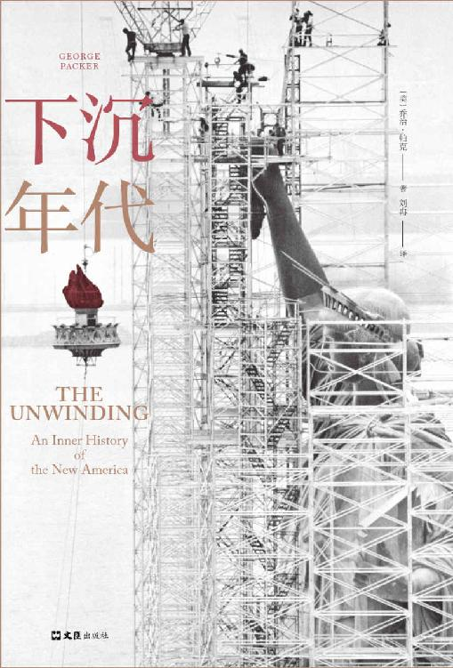

看净增益，不看结业率
比较培训时，先找包含退出者的收入结果，再扣掉学费、少工作的收入和照护开支。
回到文章 ↗先看项目、期限和比较对象都很重要；一张证书只能回答其中一小部分。
易漏结业照片里的笑脸，很容易把中途离开的人留在画面外。
下一步向培训方索取分期结果，并找实际招聘的雇主核实资格是否被认可，是比再读一遍宣传语更有用的起点。
岗位、照护和现金，决定一条路能否走得通。
故事 · 思想 · 生活
从具体的人出发，读懂生活背后的条件。
把值得留下的想法，带回自己的日常。

先带走三个观点
随身带走的方法
比较培训时，先找包含退出者的收入结果，再扣掉学费、少工作的收入和照护开支。
回到文章 ↗先看项目、期限和比较对象都很重要；一张证书只能回答其中一小部分。
易漏结业照片里的笑脸，很容易把中途离开的人留在画面外。
下一步向培训方索取分期结果，并找实际招聘的雇主核实资格是否被认可，是比再读一遍宣传语更有用的起点。
岗位、照护和现金，决定一条路能否走得通。
看一项效率改进，除了产出，还要看员工到手收入和能自主安排的时间。
回到文章 ↗先看临时改班减少了多少，比“大家更满意”更容易核实。
易漏有人可能愿意集中上长班，以减少通勤；照护安排不同，选择也会不同。
下一步开始前约定怎样记录收入和时间，才看得见成本有没有落到另一群人身上。
规则可以改变，代价也可能转移。
把地区岗位数与同一批人的收入轨迹放在两列，结论就不会只剩一个向上或向下的箭头。
回到文章 ↗先看一个时期的收入变化、一个地方的岗位增长、两代人的机会，回答的是不同问题。
易漏新迁入者带来的繁荣，也可能把旧居民的损失遮住。
下一步读到复苏消息，找一找留下来的劳动者后来挣了多少。
地方多了工作，原来的人未必已经恢复。